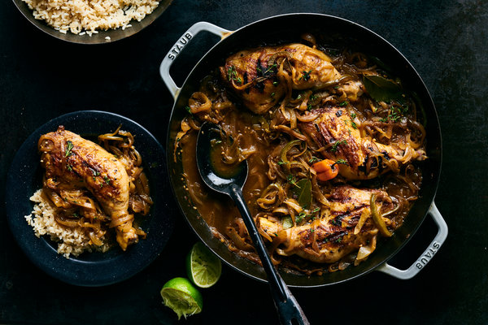

Chicken Yassa Recipe

Description
Popular across West Africa, chicken yassa coaxes deep flavor from a handful of simple ingredients:
smoky grilled chicken, sweet caramelized onions, tangy lime, bright ginger and spicy Scotch bonnet chile.
This version comes from “The Fonio Cookbook” by chef Pierre Thiam (Lake Isle Press, 2019).
Mr. Thiam, who was born and raised in Dakar, is the chef and owner of Teranga, a West African restaurant in Harlem.
His recipe calls for bone-in chicken legs, but, in southern Senegal, where the dish originated, you might be served
other chicken parts, fish yassa or even lamb yassa. The cooking method is flexible: The chicken develops the best smoky
char when grilled, but will still be delicious seared in a grill pan or cast-iron skillet.
Ingredients
- 4 bone-in, skin-on chicken legs (2 1/2 to 3 pounds)
- 4 scallions, trimmed, whites and greens finely chopped
- 2 tablespoons fresh thyme, finely chopped (or 2 teaspoons dried)
- 1 tablespoon white vinegar or apple cider vinegar
- ½ cup lime juice (from 3 or 4 limes), plus more as needed
- 4 tablespoons peanut, vegetable or canola oil, plus more as needed
- Kosher salt and black pepper
- 2 pounds yellow onions, halved and sliced 1/2-inch thick
- 1 green bell pepper, halved, seeded and cut into thin matchsticks
- 1 whole Scotch bonnet chile, poked with a fork (or 1 whole habanero chile, 1 to 2 minced jalapeños,
or 1/2 to 1 teaspoon red-pepper flakes)
- 4 garlic cloves, finely chopped
- 4 teaspoons finely chopped fresh ginger
- 3 fresh or dried bay leaves
- 2 teaspoons Dijon mustard (optional)
- Cooked rice or fonio, for serving